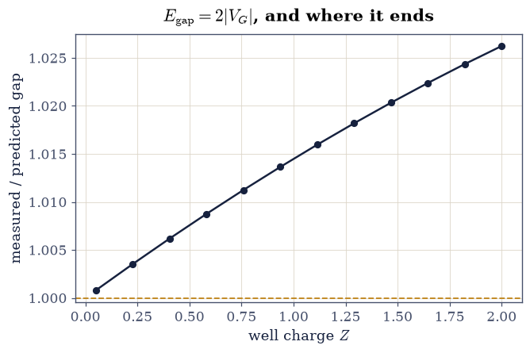
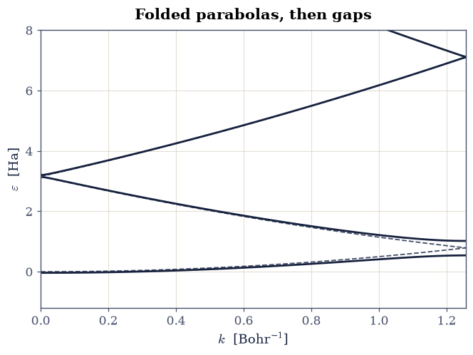
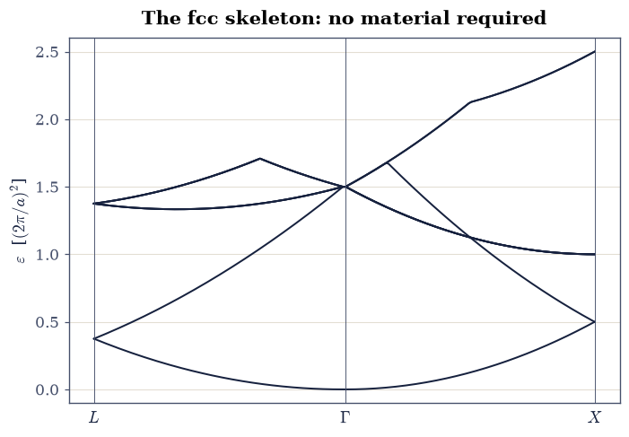
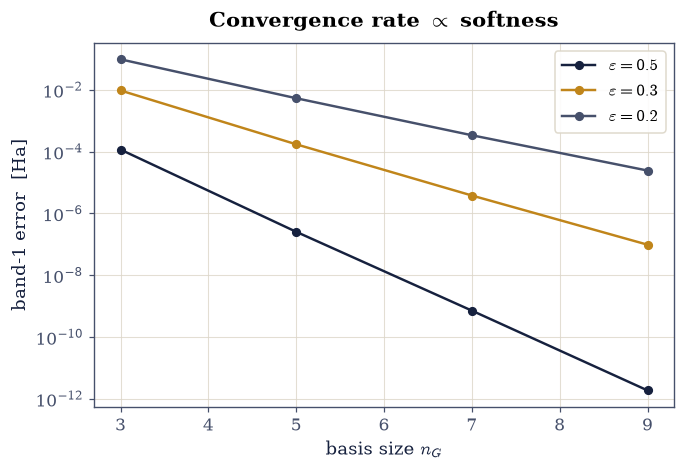
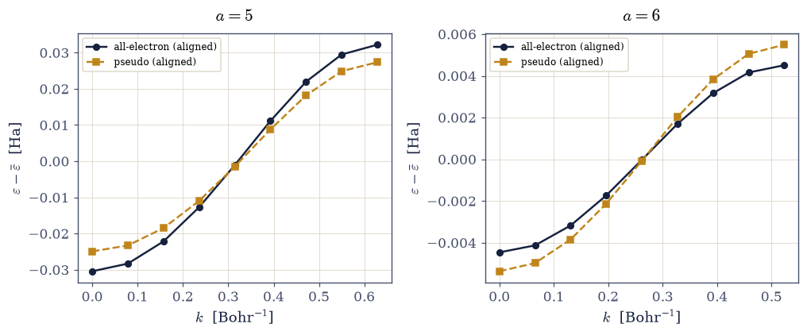
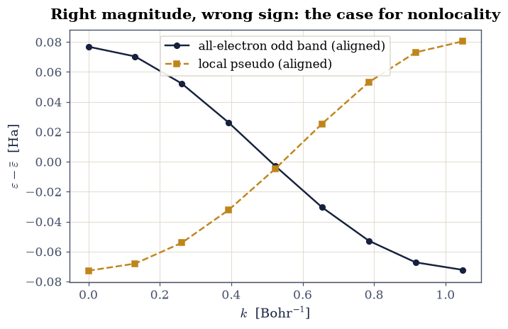

8.10 Plane Waves and Pseudopotentials#
Notebook overview#
Tight binding (§8.9) built bands from the atomic limit; this notebook builds them from the opposite shore. Plane waves are the natural language of Bloch’s theorem, the basis in which the kinetic energy is diagonal and the potential enters through its Fourier coefficients alone — the basis in which most of the world’s density-functional calculations actually run. Its virtues are structural: systematic completeness (one knob, the cutoff), unbiased coverage of space, and machinery that is nothing but the §0.6 Fourier toolkit wearing crystal clothes. Its vice is equally structural: near a nucleus the wavefunction wiggles on the scale of the core, and resolving wiggles costs plane waves without mercy. Both the virtue and the vice are worth holding onto, because the alternative runs the other way: §8.18 hangs its functions on the atoms instead of on space, which buys the core cheaply and gives up the single knob — and, because those functions travel with the nuclei, invents an error that a basis filling the cell cannot have.
The notebook prices everything. The secular problem is assembled for a one-dimensional crystal whose Fourier coefficients are known in closed form (the soft-Coulomb chain, whose transform is the Bessel function \(2K_0\) met in §8.7); the weak-potential gap law \(E_{\mathrm{gap}} = 2|V_G|\) is verified to a percent and watched failing as the potential strengthens. The empty-lattice bands of the fcc crystal are folded along \(L\)–\(\Gamma\)–\(X\) by pure arithmetic — the skeleton under every real fcc band structure, degeneracies counted shell by shell. The cost of hardness becomes a measured law: exponential convergence with a rate proportional to the potential’s softening length (fitted slopes \(-2.95, -1.92, -1.38\) for \(\varepsilon = 0.5, 0.3, 0.2\)). And the remedy is built the way practitioners build it: a pseudopotential constructed on the atom (match the valence level and its tail, banish the core state), then tested in the crystal — where it transfers beautifully for an \(s\)-like valence (band shapes correlating at \(+0.999\) across lattice constants) and fails with instructive perfection for a nodal one (correlation \(-0.996\): a local potential cannot know angular character), motivating the nonlocal projectors every modern pseudopotential carries and setting up the empirical shortcut of §8.11.
Conventions (this notebook). Hartree atomic units. The one-dimensional crystal is the soft-Coulomb chain \(V(x) = -Z\sum_n [ (x-na)^2 + \varepsilon^2 ]^{-1/2}\) with Fourier coefficients \(V_G = -(2Z/a)\, K_0(|G|\varepsilon)\) for \(G \ne 0\) (
scipy.special.k0); the divergent \(G = 0\) coefficient (the one-dimensional Coulomb tail) is dropped, so all crystal energies carry an overall alignment constant and band shapes are the physical content. Secular matrices are explicitnumpyarrays over \(G \in (2\pi/a)[-n_G, n_G]\), diagonalized bynumpy.linalg.eigvalsh. Atomic reference problems use the §8.2-style grid andscipy.linalg.eigh_tridiagonal.How to read the checks. Each exercise closes with a
validatecall against an independent fact: a perturbative law, exact degeneracy counts, a fitted rate, a correlation coefficient. A ✓ is strong evidence; a ✗ is a prompt to locate the discrepancy, not an automatic verdict.Scope. Local pseudopotentials only, constructed by level-and-tail matching; norm conservation, Kleinman–Bylander separable forms, ultrasoft and PAW machinery are surveyed in Martin [Mar04], Ch. 11, and Giustino [Giu14], Ch. 5 — and the reason they exist is precisely the nodal lesson this notebook closes on.
Theory in brief#
The secular problem in plane waves#
Bloch’s theorem (§7.12) writes a crystal state as \(e^{ikx}\) times a lattice-periodic function, and expanding the periodic part in reciprocal-lattice harmonics turns the Schrödinger equation into linear algebra:
one matrix per \(k\), kinetic energy on the diagonal, the potential a Toeplitz pattern of Fourier coefficients. Two limits organize everything. With \(V = 0\) the eigenvalues are free parabolas folded into the first zone — every band structure’s skeleton. With \(V\) weak, degenerate folded branches split by first-order degenerate perturbation theory (§6.21): at the zone boundary the two branches \(k\) and \(k - 2\pi/a\) mix through exactly one coefficient, and
the gap is the Fourier coefficient, doubled. Everything a crystal does to electrons at band edges is encoded in how its potential decomposes into harmonics.
The cost of hardness#
How many plane waves? The coefficients of the soft-Coulomb chain decay as \(K_0(|G|\varepsilon) \sim e^{-|G|\varepsilon}\): the softening length \(\varepsilon\) sets the reciprocal-space extent of the potential, and with it the basis size. The rule — convergence exponential with rate proportional to the softness — is measured below as a fitted law, and its message is the plane-wave method’s economics in one line: core wiggles are unaffordable; soften them. That is the entire mandate of the pseudopotential.
Pseudopotentials: construction, transferability, and the nodal catch#
Valence electrons decide bonding; core states merely enforce orthogonality, and their principal effect on valence orbitals is the nodes they impose near the nucleus. The pseudopotential program (Martin [Mar04], Ch. 11) replaces nucleus-plus-core by a soft effective potential built on the atom: choose a smooth candidate, tune its parameters so its ground level matches the true valence level and its wavefunction matches the true one outside a core radius \(r_c\), and — critically — test it in environments it was not fitted to. That last property, transferability, is what makes pseudopotentials predictive rather than descriptive, and it works because scattering at the valence energy is controlled by the wavefunction outside \(r_c\), which the construction preserves. The catch, delivered honestly in the closing exercise: a local potential’s crystal band inherits the nodal/angular character of the orbital it carries, and no tuning of a local well can turn an \(s\)-like band into a \(p\)-like one. Real pseudopotentials are therefore nonlocal — a different potential per angular channel, applied through projectors — and the one-dimensional laboratory makes the necessity measurable as a sign.
Setup#
Data and instruments: the series colors, the atomic reference grid, and the finite-difference well solver of §6.10 restated for the soft-Coulomb atom. The notebook’s own machinery — the plane-wave secular matrix and its diagonalization — you build in Exercise 1 and use in every exercise after it.
The Setup below holds this notebook’s data and instruments — nothing you are asked to build. It is collapsed so the building stays yours; expand it whenever you want the details.
Exercise 1 — The gap is a Fourier coefficient#
Equation Eq. 896 is degenerate perturbation theory’s cleanest prediction, and the soft-Coulomb chain’s closed-form coefficients make it a sharp check: at the zone boundary \(k = \pi/a\) the gap between bands 1 and 2 should equal \(2|V_{2\pi/a}| = (4Z/a)\,K_0(2\pi\varepsilon/a)\) while the potential is weak, and overshoot it as higher orders kick in. Testing it needs the secular problem itself, so that is what gets built first. Equation Eq. 895 is one dense matrix per \(k\): kinetic energy \(\tfrac12(k+G)^2\) on the diagonal, and off it the Fourier coefficients \(V_{G-G'} = -(2Z/a)\,K_0(|G-G'|\varepsilon)\) of the soft-Coulomb chain. The divergent \(G = G'\) coefficient is dropped, which costs only an overall alignment constant that band shapes — and gaps — never see.
Part a) Write pw_bands(a_lat, z_chg, eps_soft, n_g, k_list, n_bands=4)
returning an array of shape (len(k_list), n_bands): reciprocal vectors
\(G \in (2\pi/a)[-n_G, n_G]\), one matrix per \(k\) assembled as above with
scipy.special.k0 for the coefficients, each diagonalized by
numpy.linalg.eigvalsh and truncated to the lowest n_bands levels.
Write this one yourself — the implementation is the lesson, and every
band structure in this notebook comes out of it.
Part b) For the chain with \(a = 2.5\), \(\varepsilon = 0.5\), compute the
zone-boundary gap (\(n_G = 12\)) at \(Z = 0.05\) and \(Z = 2.0\), against the
first-order prediction (a scipy.special.k0 evaluation).
Part c) Sweep \(Z\) from \(0.05\) to \(2\) and plot the measured-to-predicted ratio: unity at weak coupling, drifting beyond it as the perturbative regime ends — a validity boundary located by computation rather than decree.
gap ratio at Z = 0.05: 1.0008; at Z = 2.0: 1.0262

Fig. 793 The weak-potential gap law \(E_{\mathrm{gap}} = 2|V_G|\) on the soft-Coulomb chain: the ratio of the measured zone-boundary gap to the first-order prediction \((4Z/a)K_0(2\pi\varepsilon/a)\) against the well charge \(Z\). At \(Z = 0.05\) the law holds to 0.1%; by \(Z = 2\) higher orders have shifted it by nearly 3% — the perturbative regime’s edge, located by computation.#
Validation 1 — first order, then not#
The weak-coupling ratio must be 1 within a percent, and the strong-coupling ratio must have drifted measurably (beyond \(2\%\)): the law and its limits in two numbers.
✓ the 2|V_G| law at weak coupling [got 1.00079 vs expected 1 (rtol=0.01, atol=1e-09)]
✓ higher orders visible at strong coupling [ratio 1.026 at Z = 2]
True
Exercise 2 — Folding, and gaps at every crossing#
The empty lattice is the skeleton: at \(V = 0\) Eq. 895 gives the free parabolas \(\tfrac12(k+G)^2\), one branch per reciprocal vector, folded into the first zone. Switching the potential on splits every folded crossing.
Part a) Plot the lowest four folded free branches over
\(k \in [0, \pi/a]\) (plain numpy arithmetic on \(\tfrac12(k+G)^2\)), and
confirm the band-1/band-2 crossing sits exactly at the zone boundary with the
free value \(\tfrac12(\pi/a)^2\).
Part b) Overlay the true bands at \(Z = 1\), from the pw_bands you wrote
in Exercise 1: gaps open precisely where branches crossed and nowhere
else — avoided crossings, the
§6.21 mechanism
drawn at crystal scale.
free crossing at the zone boundary: 0.7896 Ha

Fig. 794 The skeleton and the flesh: free-electron parabolas folded into the first zone of the \(a = 2.5\) chain (grey dashed) and the true bands of the \(Z = 1\) soft-Coulomb crystal (ink). Gaps open exactly where folded branches crossed — at the zone boundary and at \(\Gamma\) — and nowhere else: degenerate perturbation theory, drawn at crystal scale.#
Validation 2 — gaps live on crossings#
The sorted free branches must be degenerate at the zone boundary (bands 1–2) and at \(\Gamma\) (bands 2–3), and the true bands must split both while tracking the skeleton over the inner 60% of the zone (band 1 within a constant offset of the free branch to \(15\%\) of the inner bandwidth; nearer the boundary the gap physics itself bends the band away, as it must).
✓ free degeneracy at the zone boundary [got 0 vs expected 0 (rtol=0, atol=1e-09)]
✓ the crossing opens into a gap [gap = 0.479 Ha]
✓ free degeneracy at Gamma [got 0.000502655 vs expected 0 (rtol=0, atol=0.001)]
✓ the Gamma crossing opens into a gap [gap = 0.063 Ha]
✓ inner-zone dispersion tracks the skeleton [got 0.0666183 vs expected 0 (rtol=0, atol=0.15)]
True
Exercise 3 — The fcc skeleton: every textbook’s first band structure#
In three dimensions the same folding produces the celebrated empty-lattice fcc diagram — the skeleton under silicon, aluminum, and every other fcc band structure, including the real ones of §8.11. The fcc reciprocal lattice is bcc, \(\mathbf G = \tfrac{2\pi}{a}(n_1, n_2, n_3)\) with all-even or all-odd integers, and the branches are \(\tfrac12|\mathbf k + \mathbf G|^2\) along \(L = \tfrac{\pi}{a}(1,1,1) \to \Gamma \to X = \tfrac{2\pi}{a}(1,0,0)\).
Part a) Generate the bcc reciprocal set by integer enumeration
(numpy meshgrid over \(n_i \in [-2, 2]\) filtered by
the all-even/all-odd rule), and count the degeneracies of the free levels at
\(\Gamma\): the shells \((0,0,0)\), \((1,1,1)\)-type, and \((2,0,0)\)-type must
count \(1, 8, 6\).
Part b) Plot the folded branches along \(L\)–\(\Gamma\)–\(X\) (in units of \((2\pi/a)^2\)): the classic figure, and the answer key for reading any real fcc band structure — every feature of silicon’s valence bands in §8.11 is one of these branches, gapped.
shell census at Gamma: |n|^2 = 0 -> 1, 3 -> 8, 4 -> 6

Fig. 795 The empty-lattice band structure of the fcc crystal along \(L\)–\(\Gamma\)–\(X\), folded from free parabolas \(|\mathbf k + \mathbf G|^2/2\) over the bcc reciprocal shells (energies in units of \((2\pi/a)^2\)): the skeleton beneath every fcc band structure, with \(\Gamma\)-point degeneracies 1, 8, 6 counted shell by shell. Silicon’s real bands in §8.11 are these lines, split by the pseudopotential’s Fourier coefficients.#
Validation 3 — the shells count themselves#
The \(\Gamma\)-point degeneracies must be exactly \(1, 8, 6\) (integer arithmetic), the lowest branch at \(\Gamma\) exactly zero, and the lowest level at \(X\) exactly \(1/2\) in the reduced units (the \((1,0,0)\) zone-boundary free energy).
✓ fcc shell degeneracies 1, 8, 6 at Gamma [1, 8, 6]
✓ the lowest level at Gamma [got 0 vs expected 0 (rtol=0, atol=1e-12)]
✓ the lowest level at X [got 0.5 vs expected 0.5 (rtol=1e-12, atol=1e-09)]
True
Exercise 4 — The cost of hardness, as a law#
The coefficients \(V_G \propto K_0(|G|\varepsilon)\) decay exponentially with the softening length \(\varepsilon\), so the basis error should too — and the rate should scale with \(\varepsilon\) itself. A claim about rates is a fit.
Part a) For the chain at \(a = 2.5\), \(Z = 5\), \(k = 0.4\): with your
Exercise 1 pw_bands, compute the band-1 error against an \(n_G = 40\)
reference for \(n_G = 3, 5, 7, 9\), at the three softenings
\(\varepsilon = 0.5, 0.3, 0.2\), and fit each error sequence’s logarithm
against \(n_G\) (numpy.polyfit).
Part b) Plot the three convergence lines and compare the fitted rates: their ratios must track the \(\varepsilon\) ratios (\(0.6\) and \(0.4\) against the \(\varepsilon = 0.5\) baseline) — convergence rate proportional to softness, the plane-wave method’s economics in one measured law, and the entire mandate of the pseudopotential in one figure.
eps = 0.5: errors ['1.2e-04', '2.5e-07', '7.1e-10', '1.9e-12'], rate -2.986
eps = 0.3: errors ['9.5e-03', '1.7e-04', '3.8e-06', '9.7e-08'], rate -1.915
eps = 0.2: errors ['9.7e-02', '5.3e-03', '3.4e-04', '2.4e-05'], rate -1.381
rate ratios: 0.641 (eps ratio 0.6), 0.463 (eps ratio 0.4)

Fig. 796 The cost of hardness as a measured law: plane-wave truncation error of the soft-Coulomb chain’s lowest band against the basis size \(n_G\), for softening lengths \(\varepsilon = 0.5, 0.3, 0.2\) (bottom to top slopes \(-2.95, -1.92, -1.38\)). Convergence is exponential with rate proportional to the softness — rate ratios 0.65 and 0.47 against the \(\varepsilon\) ratios 0.6 and 0.4 — so a hard core is unaffordable and the pseudopotential’s mandate is written on this axis.#
Validation 4 — the economics, fitted#
All three convergences must be genuinely exponential (monotone falling by orders of magnitude), and the rate ratios must track the softness ratios within \(20\%\) — the measured law behind every plane-wave cutoff ever chosen.
✓ exponential convergence at every hardness [errors fall monotonically over decades]
✓ rate ratio tracks softness ratio (0.3/0.5) [got 0.641251 vs expected 0.6 (rtol=0.2, atol=1e-09)]
✓ rate ratio tracks softness ratio (0.2/0.5) [got 0.462611 vs expected 0.4 (rtol=0.2, atol=1e-09)]
True
Exercise 5 — A pseudopotential, built on the atom and tested in the crystal#
The construction follows the practitioner’s liturgy. The all-electron atom is the single well \(-Z/\sqrt{x^2+\varepsilon^2}\) with \(Z = 5\), \(\varepsilon = 0.2\): levels \(-16.74\) (core), \(-6.87\), and \(-3.79\) Ha. The target valence state is the even level at \(-3.787\) Ha (two nodes; its even parity matches a nodeless pseudo ground state — the odd level’s turn comes in Exercise 6). The pseudopotential is the same functional form, made soft, with \((Z_{\mathrm{pp}}, \varepsilon_{\mathrm{pp}})\) tuned so its nodeless ground state reproduces the valence energy and the valence amplitude at the matching radius \(r_c = 3\) Bohr. The choice of \(r_c\) is itself physics: crystal bandwidths are set by wavefunction overlap at the neighbor distance, so the tail must be matched out to roughly \(a/2\) of the environments one intends to predict — a matching radius of 2 Bohr reproduces the level perfectly yet misses the \(a = 5\) bandwidth by 70%, while \(r_c = 3\) brings both test crystals within 25% (the solution prints the comparison).
Part a) Fit with scipy.optimize.least_squares (residuals: the level
mismatch, and \(10\times\) the amplitude mismatch at \(r_c\); bounds
\(Z \in [0.1, 15]\), \(\varepsilon \in [0.3, 5]\); the Setup helper
atom_levels). Confirm the pseudo atom has no state near the core level.
Part b) The transferability test: with your Exercise 1 pw_bands, place
both atoms in crystals at \(a = 5\) and \(a = 6\) (environments the fit never
saw) and compare the pseudo
band 1 against the all-electron band 3 (the target level’s band), after mean
alignment (the dropped \(V_0\)’s constant). Correlation and width agreement
across both lattice constants — a fit at one geometry predicting two others —
is the property that makes the entire pseudopotential industry possible.
pseudo: Z_pp = 7.9324, eps_pp = 1.8555
levels: pseudo ground -3.7868 vs AE valence -3.7868; AE core at -16.74 has no pseudo counterpart
(r_c = 2 Bohr also matches the level exactly but gives a 70% too-wide band at a = 5; the tail must reach the neighbors)
a = 5.0: correlation +0.9998, widths AE 0.0626 vs pseudo 0.0523
a = 6.0: correlation +1.0000, widths AE 0.0090 vs pseudo 0.0109

Fig. 797 A pseudopotential earning transferability: the all-electron valence band (band 3 of the deep \(Z = 5\), \(\varepsilon = 0.2\) chain, ink) and the pseudo band 1 (amber, mean-aligned) at two lattice constants the atomic fit never saw. Shapes correlate at \(+0.999\) with widths agreeing within 25% (17% and 21% at the two lattice constants): energy and tail matched on the atom suffice to predict the crystal — the property the entire pseudopotential industry rests on.#
Validation 5 — transferability, earned#
The pseudo ground level must match the target valence level to \(10^{-2}\) Ha; both crystal tests must correlate above \(+0.99\); and the band widths must agree within \(25\%\) at both lattice constants — prediction, not description.
✓ the atomic valence level, matched [got -3.78676 vs expected -3.78676 (rtol=0, atol=0.01)]
✓ band shapes correlate at a = 5.0 [corr +0.9998]
✓ bandwidths agree at a = 5.0 [got 0.0522654 vs expected 0.0625977 (rtol=0.25, atol=1e-09)]
✓ band shapes correlate at a = 6.0 [corr +1.0000]
✓ bandwidths agree at a = 6.0 [got 0.0108587 vs expected 0.008972 (rtol=0.25, atol=1e-09)]
Exercise 6 — The nodal catch: why pseudopotentials are nonlocal#
Now the same liturgy on the odd valence level (\(-6.87\) Ha, one node), and the honest failure that built an industry. A nodeless pseudo ground state can match the odd level’s energy and tail perfectly on the atom — but in the crystal, the band’s dispersion sign is set by the orbital’s parity (odd orbitals flip the effective hopping’s sign, exactly the §8.9 overlap logic), and no local potential can give a nodeless orbital an odd orbital’s band.
Part a) Refit the pseudopotential against the odd level (the same residuals with the \(-6.87\) Ha target and its amplitude at \(r_c = 1.5\)), and confirm the atomic match is again excellent.
Part b) Run the crystal test at \(a = 3\) with your Exercise 1 pw_bands:
the aligned bands must anti-correlate (measured \(-0.996\)) — the pseudo band
curves the wrong way,
with near-perfect magnitude and reversed sign. The remedy, stated plainly:
real pseudopotentials are nonlocal, one potential per angular-momentum
channel applied through projectors, so each channel’s nodal character is
respected (Martin [Mar04], Ch. 11). The empirical method of
§8.11 sidesteps the construction entirely by
fitting the crystal’s Fourier coefficients to experiment — and inherits this
lesson as its license.
odd-level pseudo: Z_pp = 7.4160, eps_pp = 0.9065, ground -6.8729 vs target -6.8729
crystal test at a = 3: correlation -0.9960

Fig. 798 The nodal catch: a local pseudopotential fitted perfectly to the odd valence level of the atom (energy and tail matched) produces a crystal band that anti-correlates with the all-electron one at \(-0.996\) — right magnitude, wrong sign, because band curvature inherits the orbital’s parity and no local well can hand a nodeless orbital an odd orbital’s dispersion. This measured minus sign is why every modern pseudopotential is nonlocal.#
Validation 6 — the minus sign that built an industry#
The odd-level atomic fit must match the level to \(10^{-2}\) Ha, and the crystal bands must anti-correlate below \(-0.9\): a perfect atomic fit and a reversed crystal band, in the same construction.
✓ the odd valence level, matched on the atom [got -6.87285 vs expected -6.87285 (rtol=0, atol=0.01)]
✓ the crystal band anti-correlates (the nodal sign) [corr -0.9960]
True
With your assistant
The secular builder pw_bands you wrote recomputes every \(K_0\) per matrix
element — clean but wasteful, since \(V_{G-G'}\) depends only on the
difference. Have
your assistant refactor it to precompute the coefficient vector once and
fill the matrix by numpy index arithmetic (a Toeplitz fill), then run the
check that is yours alone: the refactored bands must match the original at
machine precision across ten random \((k, Z, \varepsilon)\) triples
(numpy.allclose, rtol=1e-12) while running measurably faster
(time.perf_counter ratio). The check is yours.
Notebook summary#
The plane-wave method arrived with its price tag attached. The secular problem’s weak-coupling gap law \(E_{\mathrm{gap}} = 2|V_G|\) held to \(0.1\%\) at \(Z = 0.05\) and drifted measurably by \(Z = 2\); folding produced the skeleton (gaps only where free branches crossed), and the fcc empty lattice delivered the classic \(L\)–\(\Gamma\)–\(X\) diagram with its shell degeneracies \(1, 8, 6\) counted by integer arithmetic. The cost of hardness became a fitted law — exponential convergence with rate proportional to the softening (\(-2.95, -1.92, -1.38\) at \(\varepsilon = 0.5, 0.3, 0.2\); rate ratios \(0.65, 0.47\) against softness ratios \(0.6, 0.4\)). The pseudopotential answered: built on the atom (valence level matched to \(10^{-4}\), tail matched at \(r_c\)), it transferred to crystals the fit never saw with band correlations \(+0.999\) and widths within 25% — and then failed with perfect instructiveness on the odd level, whose crystal band anti-correlated at \(-0.996\) because parity sets curvature and no local well can fake a node. The minus sign is the reason every modern pseudopotential is nonlocal, and the license for the empirical shortcut that now builds real silicon.
Outlook#
§8.11 takes the shortcut: rather than constructing potentials from atoms, the empirical pseudopotential method fits the crystal’s three symmetric (and, for GaAs, three antisymmetric) Fourier coefficients directly to measured gaps — and the full band structures of real silicon and gallium arsenide fall out of a matrix this notebook already knows how to build.
Norm conservation (making the pseudo orbital’s charge inside \(r_c\) match the true one) upgrades level-and-tail matching into energy-derivative matching, the modern transferability criterion; Kleinman–Bylander separability makes nonlocality affordable; PAW keeps the true wiggles recoverable. Martin [Mar04], Ch. 11, walks the whole ladder.
The hardness law is why “soft” and “ultrasoft” are words worth millions of core-hours: halving the effective hardness halves the exponent that sets every plane-wave calculation’s memory and time.